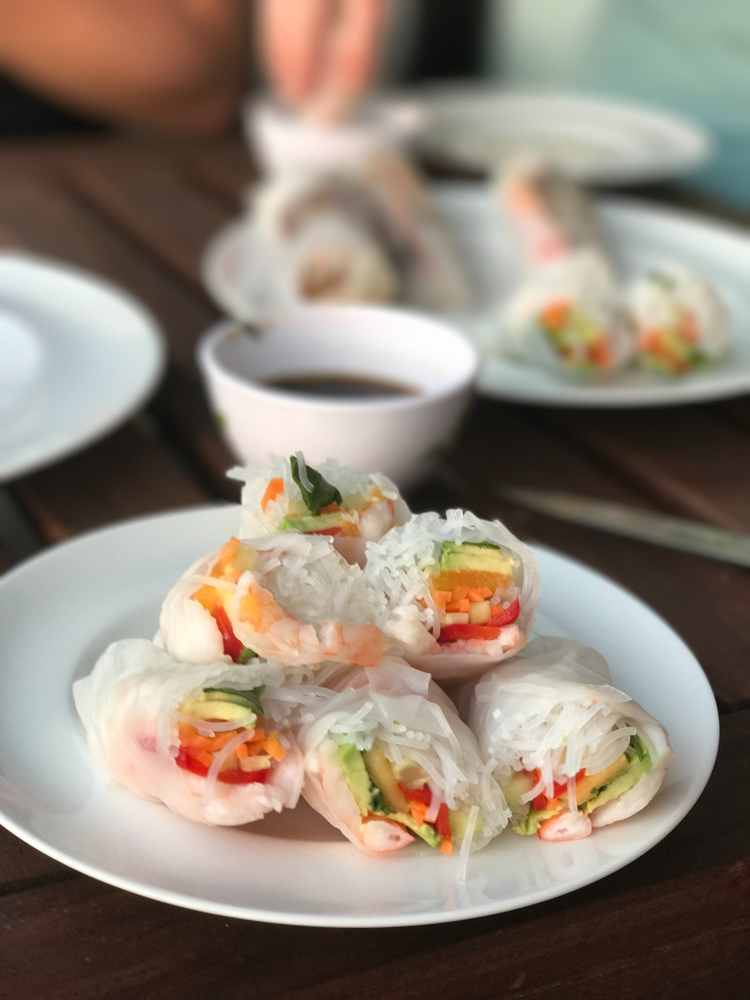

Goi Cuon ‐ Spring Rolls Recipe

Description
Gỏi cuốn, salad roll, summer roll, fresh spring roll, spring roll, or rice
paper roll, is a Vietnamese dish traditionally consisting of pork, prawn,
vegetables, bún, and other ingredients wrapped in Vietnamese bánh tráng.
Ingredients
- Rice vermicelli
- Rice wrappers
- Shrimp
- Fresh mint leaves
- Chopped cilantro
- Fish sauce
- Hoisin sauce
Steps
-
Bring a medium saucepan of water to boil. Boil rice vermicelli 3 to 5
minutes, or until al dente, and drain.
-
Fill a large bowl with warm water. Dip one wrapper into the hot water
for 1 second to soften. Lay wrapper flat. In a row across the center,
place 2 shrimp halves, a handful of vermicelli, basil, mint, cilantro
and lettuce, leaving about 2 inches uncovered on each side. Fold
uncovered sides inward, then tightly roll the wrapper, beginning at the
end with the lettuce. Repeat with remaining ingredients.
-
In a small bowl, mix the fish sauce, water, lime juice, garlic, sugar
and chili sauce.
- In another small bowl, mix the hoisin sauce and peanuts.
-
Serve rolled spring rolls with the fish sauce and hoisin sauce mixtures.
Source: Wikipedia, Allrecipes